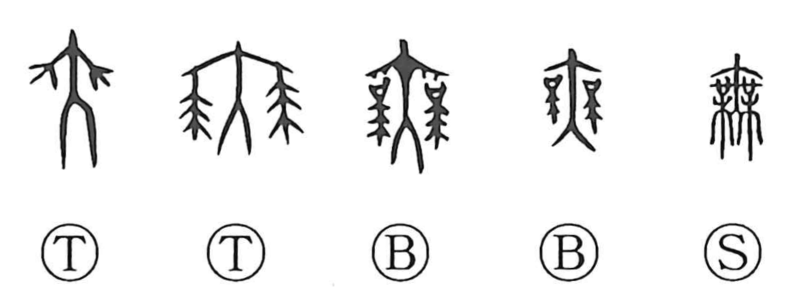

Explanation
無 originally pictures a dancer spreading ornamented sleeves. The elaborate strokes at either side belong to the dancer's costume. Oracle-bone inscriptions use the graph for a rain-invoking dance, sometimes adding the rain element to make the ceremony explicit.
Its familiar meaning ‘not’ or ‘there is none’ arose through a sound loan: the dance graph was borrowed to write a similarly sounding negative word. As this use became established, 舛, the spreading feet of a dancer, was added to distinguish 舞, ‘to dance.’ 無 then became the usual writing for absence and negation.
The dancer's broad costume also connects the sound family with abundance and luxuriant growth, as in 蕪. Those positive senses and the negative use belong to different branches of the character's history.